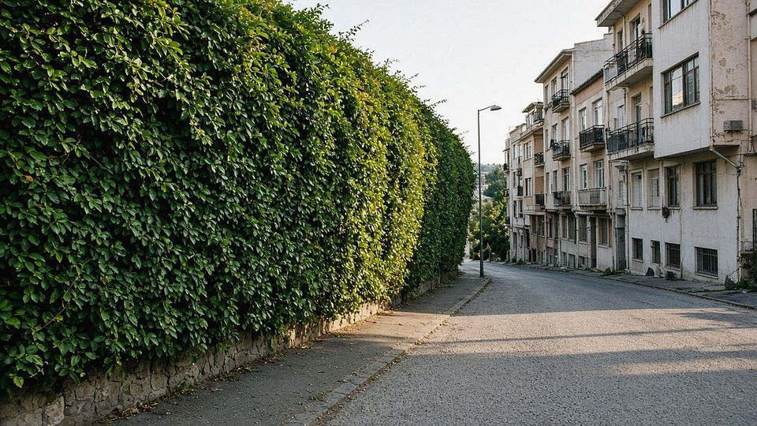

Telefon0542 519 0361
YerAbbasağa, Bostanüstü Dere Sok. 34/1, Beşiktaş İstanbul
İstanbulGMT+3
DilEnglish
Pafta 03 · Abbasağa, Beşiktaş
Ziyaretten önce arayın. Ofis Abbasağa’da; görüşmeler randevu ile.
← Kaydırarak geçin →